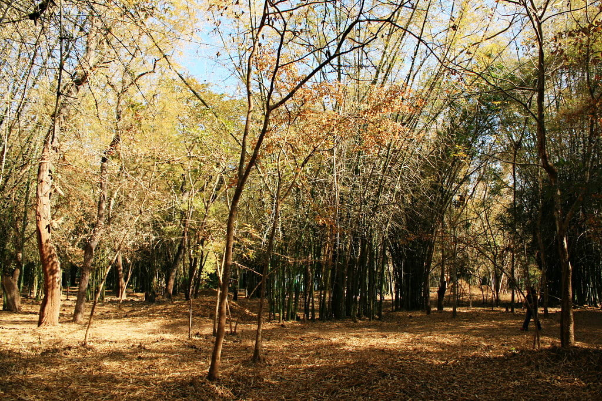

MADIKERI:The Heart of coorg

Kodagu is one of the most picturesque places in South India. More popularly
referred to as Coorg, this region is an impressive attraction in Karnataka.
Madikeri (sometimes also called Mercara) is the capital of this region and
the origin of the Cauvery River that forms the soul of south Indian civili
zation. Despite being a centre of great importance in southern history,Madi
keri in particular, and Coorg in general, retain an air of unself-conscious
beauty, waiting to be discovered by the next tourist who drives into the he
artland of screen along the western ghats. Bound by the mesmerising beauty of
the Arabian Sea,Coorg is perfect for those who seek some away time from the
hectic ways of urban living.Thick dense rainforests, greenery all around,
sweet aroma of black pepper and cardamom, rich coffee plantations, and cool
hilly terrain – Coorg is indeed the hiddenjewel of South India. The austere
serenity of Coorg can only be rivaled by its colourful and vivid culture – a
glorious marriage of natural beauty and human endeavour. Despite witnessing
a heavy footfall of tourists in the past few years, Coorg remains largely
unpolluted and unspoilt. The views and the natural beauty of the region are
simply breathtaking. Not for nothing is Coorg referred to as the ‘Scotland
of India’.
PLACES YOU MUST VISIT IN MADIKERI(Also known as scotland of India)
-
MADIKERI FORT:
click the image for further information about madikeri fort 
-
ABBEY FALLS:
click the image further information about abbey falls 
-
OMAKARESHAWER TEMPLE:
click the image for further information about omakareshawer temple
-
RAJA'S SEAT :
click the image for further information about raja's seat 
-
CAUVERY NISARAGADHAMA:
click the image for further information about cauvery nisaragadhama 